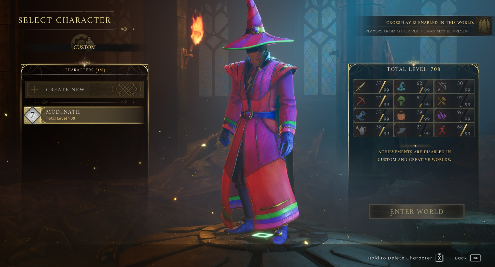
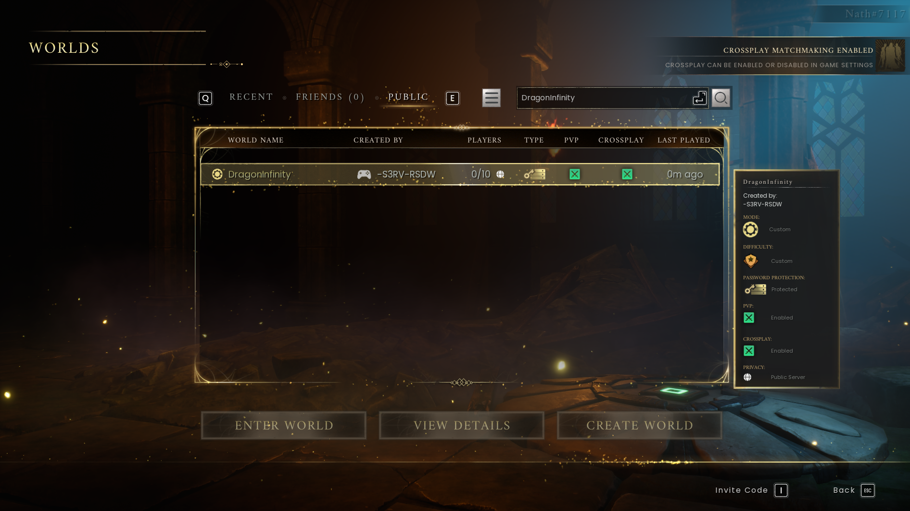
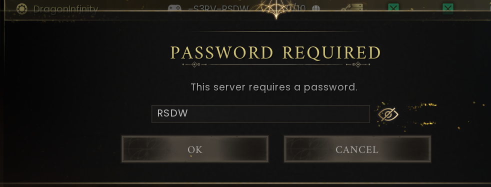

How to connect
Find the right world, choose your character and join DragonInfinity.
On this page
Controls for this walkthrough
Interact E · Inventory Tab · Map M / J · Build B
Full controls and menu navigation · * marks a controller-equivalent mapping; the in-game prompt takes priority.
Before you join
- Install and update RuneScape: Dragonwilds on your platform. Let the update finish before launching.
- Have the server password ready: RSDW. It is case-sensitive; ask the host if it has changed.
- Use the character you want to play. Double-check the name before entering the world.


Find DragonInfinity
- Open the multiplayer Worlds browser. Select Public, as shown below.
- Search for DragonInfinity. If filters are hiding custom or password-protected worlds, adjust them and search again.
- Select the matching world. The supplied screenshot shows creator -S3RV-RSDW; confirm the name and host rather than joining a similarly named world.
- Choose View Details to inspect the current settings. Select Enter World, enter RSDW and confirm.
- Once you load in, follow the first-session guide and the route to camp.


Enter the server password
The password supplied for this edition is RSDW. Enter it exactly as shown, then confirm. If it stops working, check with the host for an updated password.


If the world does not appear
- Clear the search and retype the exact name. Recheck world-browser filters.
- Check your game has finished updating. The server may also need to update or restart.
- Check the crossplay settings shown by your game and the server. Ask the host whether your platform is currently supported.
- Ask the host whether the server is online and whether the name has changed. Repeatedly creating local worlds will not connect you to this server.
If a password or connection fails
Retype the password carefully, checking capitals and accidental spaces. If it still fails, ask for the current password. For a connection error, record the exact message and your game version for the host. Never send account passwords or login codes.
More connection and gameplay fixesFurther reading
For exact requirements, detailed walkthroughs and more depth, visit the topic pages below.
Wiki adaptations and data: RuneScape: Dragonwilds Wiki contributors, CC BY-NC-SA 3.0. See credits for source dates.